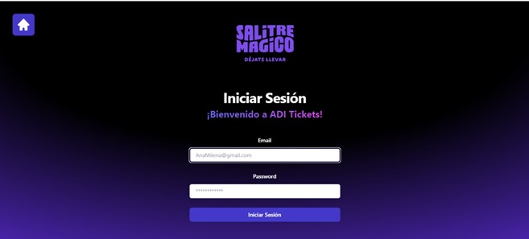
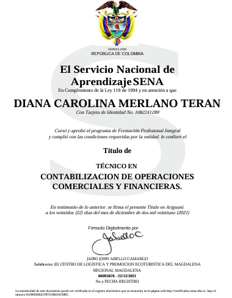

Perfil Profesional
Profesional versátil con experiencia en el ciclo completo de desarrollo de software, abarcando análisis, diseño y desarrollo de soluciones. Manejo sólido de tecnologías web como HTML, CSS, Java y control de versiones con Git. Experiencia con herramientas de diseño como Figma para prototipado de interfaces. Destaco por mis habilidades de comunicación interpersonal y mi capacidad para colaborar efectivamente en equipos multidisciplinarios. Dominio avanzado de herramientas ofimáticas, con especial énfasis en Excel y PowerPoint. Experiencia en gestión financiera, incluyendo elaboración de balances de ingresos y gastos en libros contables, así como manejo de nóminas.
Proyectos Destacados

Venta de Tiquetes
Certificaciones
2021
Técnico en contabilización de operaciones comerciales y financieras
